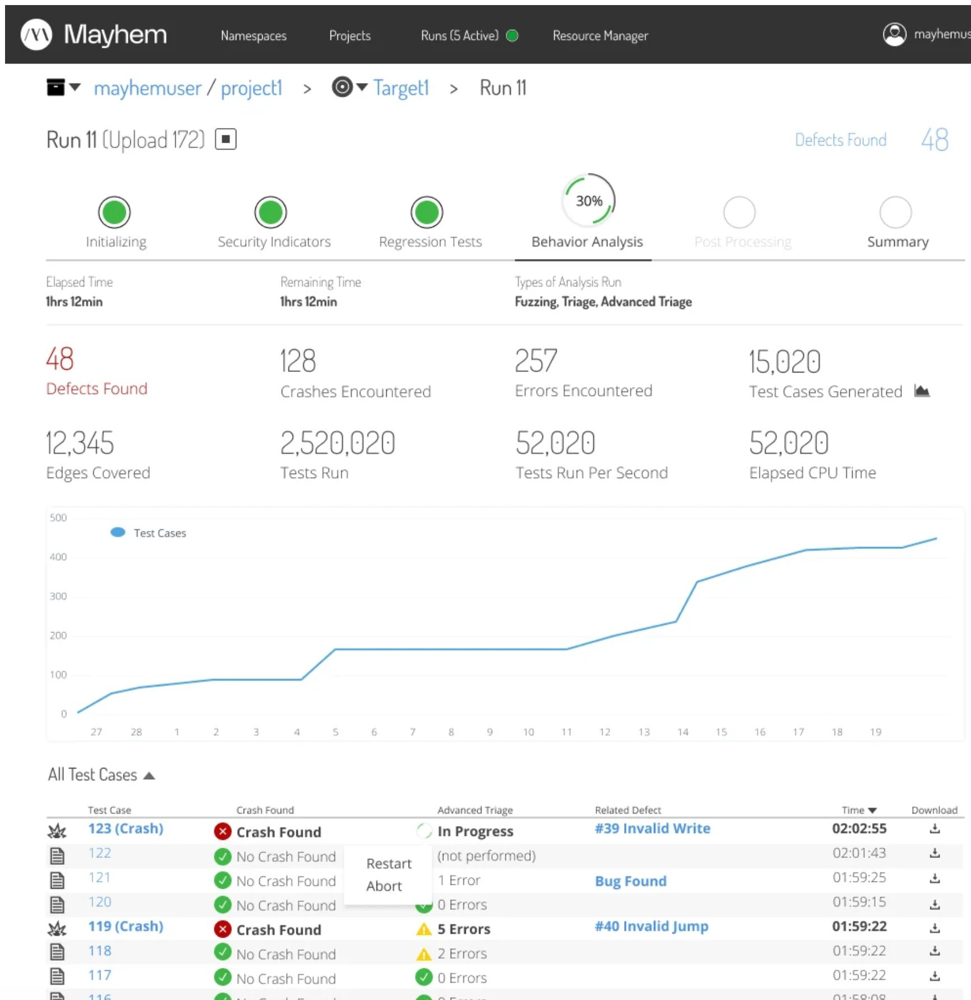
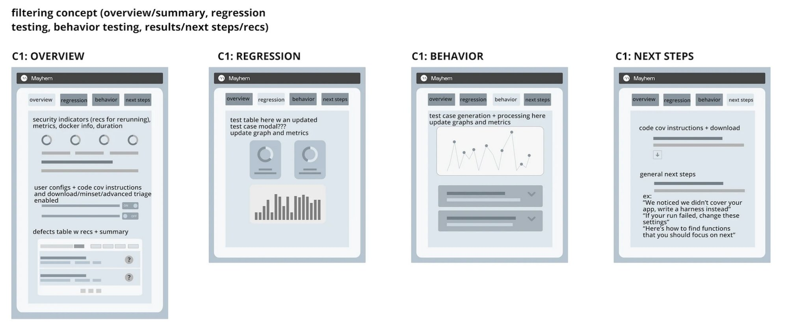
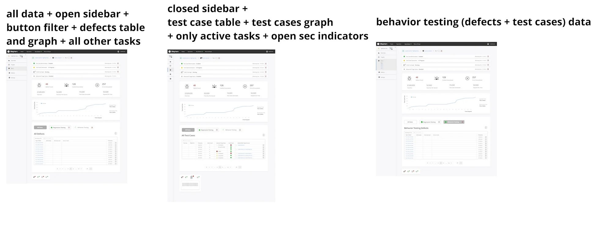
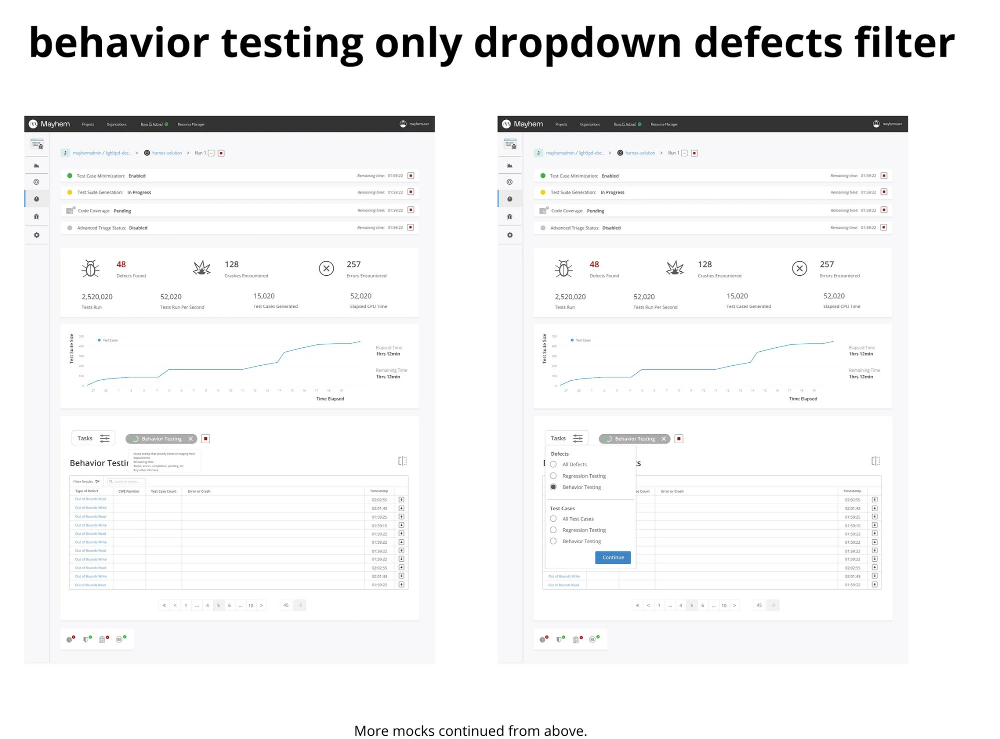
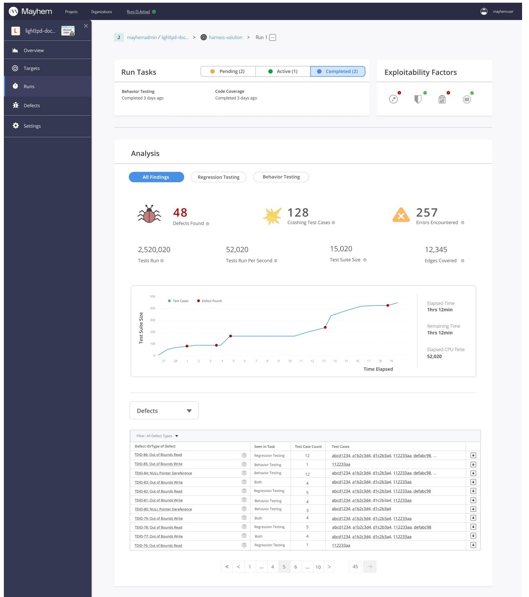
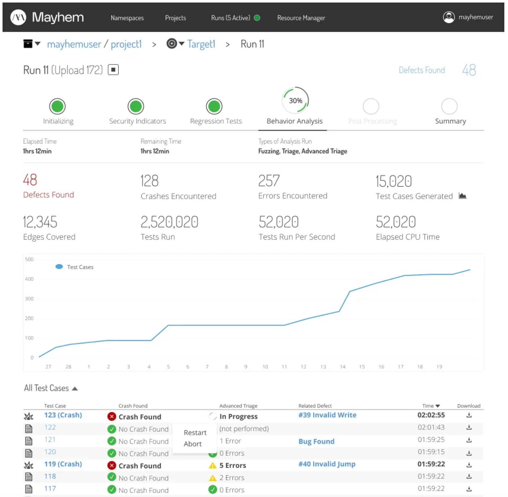
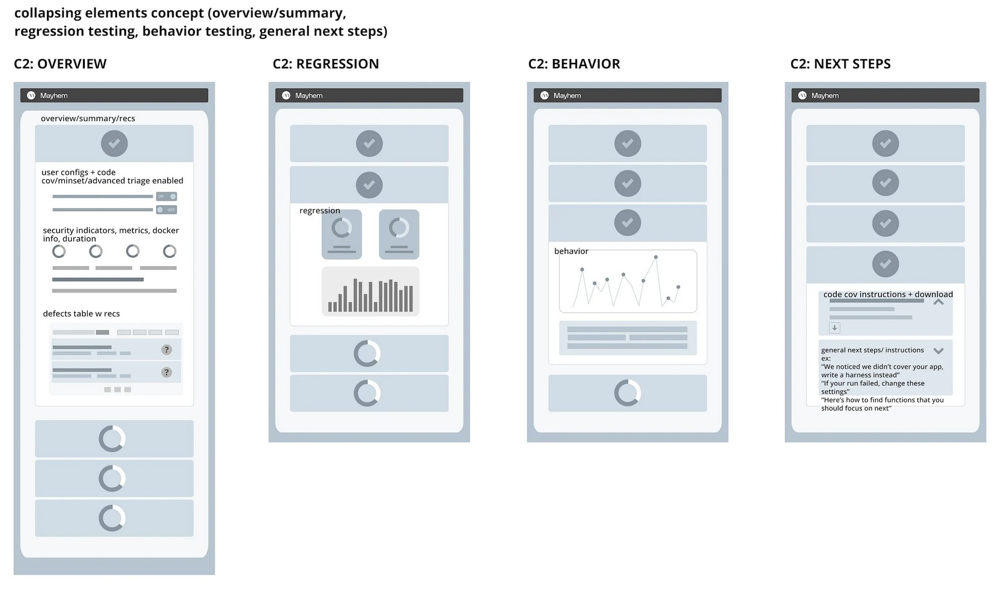
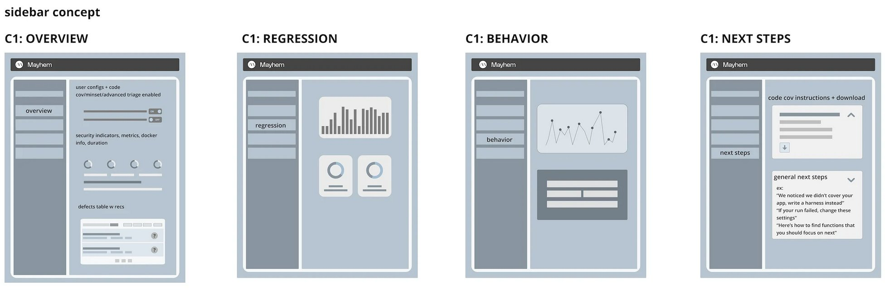

The results page is where Mayhem earns its value — it's where users see what the autonomous security testing found. The old design made that nearly impossible to parse. I fixed it.
The original results page was a wall of data that only made sense if you'd been using the product for five months. Unorganized links, confusing phase indicators that implied sequential dependency when there was none, and a defect table that required deep security expertise just to scan. New users hit this page and bounced.

Before: defect tables and test case views with no hierarchy, no status clarity, and no path forward for the user.
I explored three structural concepts before converging on the final direction. Each concept addressed the core problem differently — how do you take a wall of security testing data and make it scannable in seconds?

Concept 1 — Filtering: tab-based separation of overview, regression testing, behavior testing, and next steps. Content stays in place, context switches via tabs.

Concept 2 — Collapsing: progressive disclosure with expandable sections. Users drill into the data they need without leaving the page.

Concept 3 — Sidebar: persistent navigation with contextual content panels. Overview always accessible, detail views load in the main area.
The final design replaced the confusing "phases" with clearly labeled "tasks" — status-tagged, time-stamped, and visually distinct. Key metrics surface immediately: 48 defects found, 128 crashes, 257 errors, 2.5M tests run. A live test suite graph shows progress over time. Filterable defect and test case tables sit below, with clear severity indicators and downloadable results.

After: phase stepper with clear status, key metrics at a glance, live graph, and structured test case table with crash indicators and triage status.

Full results page: sidebar navigation, task status bar, analysis metrics, time-series graph, filterable defect table with pagination.

Three states: open sidebar with defects table, closed sidebar with test cases, and behavior-testing-filtered view. Each optimized for a different user task.

Behavior testing dropdown and defect filter interactions — designed to surface exactly the data the user needs without cognitive overload.
Tested the new design against the original with 6 commercial users. Every single one gave positive feedback. Every single one reported feeling immediately at ease understanding the information. Users described it as "a calmer experience" — which, for a security testing tool that surfaces vulnerability data, is exactly the right outcome.